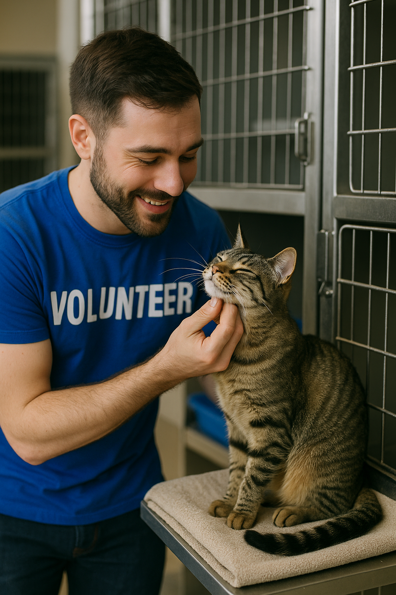
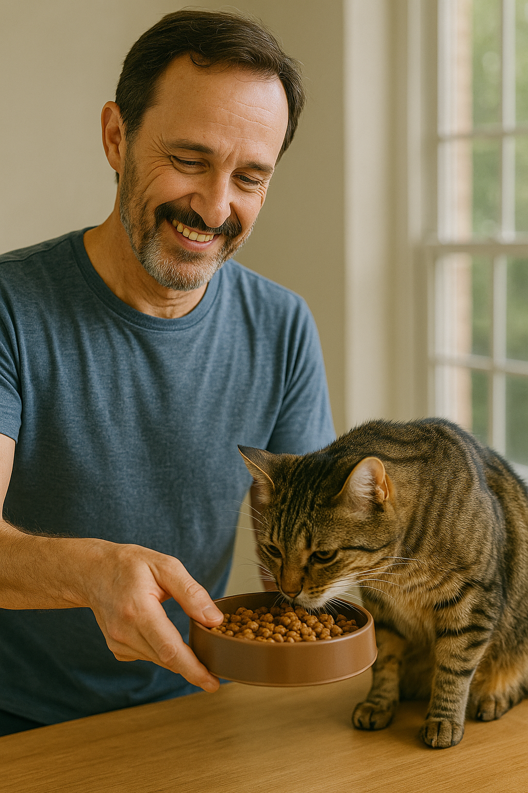
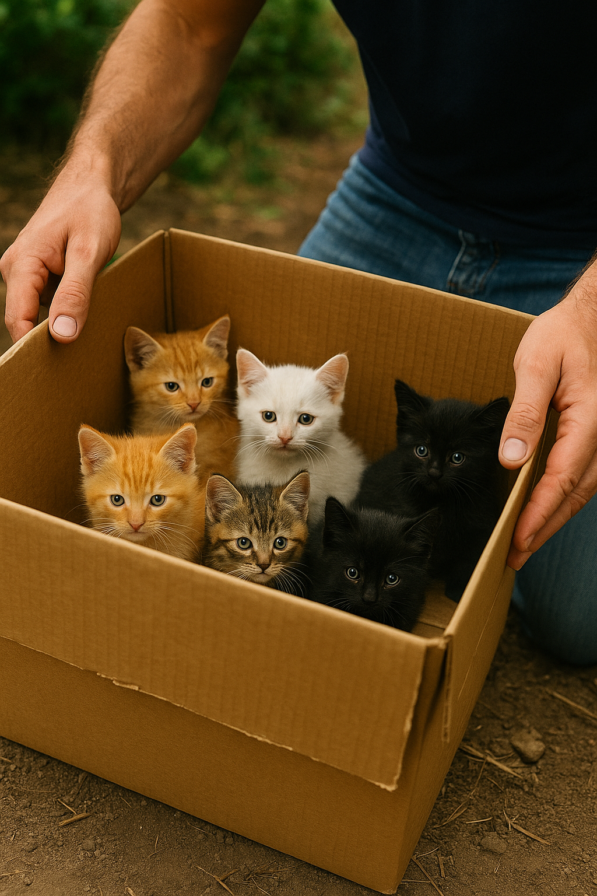

Voluntariado
Ser voluntário na FELINONG é uma oportunidade única de fazer a diferença na vida de gatos resgatados. Nossos voluntários ajudam em diversas áreas: alimentação, limpeza, cuidados médicos, socialização e eventos de adoção.
Se você ama animais e deseja contribuir com tempo e carinho, venha fazer parte da nossa equipe de voluntários!
Como Doar
Sua doação é essencial para continuarmos nosso trabalho! Aceitamos doações financeiras e de materiais como ração, areia, medicamentos e produtos de limpeza.
Formas de doação:
- Doação via PIX: felinong@ong.org
- Depósito bancário: Banco do Brasil, Ag. 1234, Conta: 56789-0
- Entrega presencial em nossa sede
Toda contribuição, por menor que pareça, ajuda a salvar vidas felinas. 💖
Resgates Recentes
Esses gatinhos foram recentemente resgatados e agora estão recebendo todo o cuidado necessário. Em breve, estarão disponíveis para adoção responsável!